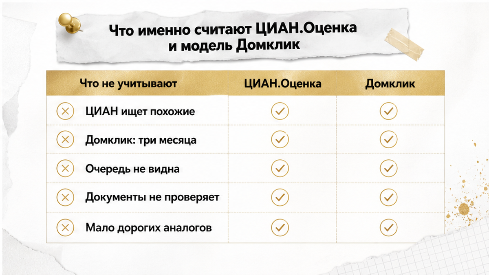

Каждую осень мне приходит одно и то же письмо. Меняются только адреса.
Покупатель присылает ссылку на объявление и скриншот из сервиса оценки. «Смотрите: алгоритм говорит восемнадцать. Продавец просит восемнадцать. Значит, восемнадцать — и есть настоящая цена. А вы мне про двадцать рассказывали».
Звоним по объявлению. Запись на просмотр — через два дня, потому что перед нами семь человек. На следующее утро объявление исчезает. Через неделю та же квартира появляется снова — и теперь она дороже рынка, а не дешевле.
Автооценка при этом не сломалась. Она честно сделала то, что умеет: посчитала цифру по объявлениям и сделкам, которые видит. Разрыв возник в другом месте. Покупатель прочитал цифру как «за столько можно купить». Сервис имел в виду «примерно столько стоят похожие». Это два разных утверждения, и между ними иногда лежат два миллиона.
Если читать целиком некогда — вот суть.
Смотрите квартиру в Тюмени и не понимаете, почему она дешевле аналогов? Напишите — разберём конкретный объект: спрос, историю объявления, собственников. До аванса, а не после.
Дальше — как устроены сами сервисы, где именно возникает разрыв и что спрашивать, чтобы не оказаться седьмым в очереди на квартиру, которую уже решили снять с продажи.
Это главная подмена. Из неё растут все остальные разочарования.
Когда сервис показывает диапазон, он отвечает на вопрос: «Сколько примерно стоят похожие объекты по тем данным, которые есть в системе?»
Покупатель читает ответ на другой вопрос: «За сколько я куплю вот эту квартиру?»
Между этими вопросами лежит всё, чего алгоритм не знает. Сколько людей уже посмотрели объект. Кто из них согласился на цену без торга. Что происходит в голове у собственника. Есть ли у него альтернатива для покупки и привязан ли он к чужим срокам.
Цена сделки — результат договорённости двух конкретных людей в конкретный день. Оценка — результат расчёта по массиву данных. Они могут совпасть, и часто совпадают. Но когда расходятся, побеждает не расчёт.
Отдельный сюжет — когда низкая цифра идёт в комплекте с обещаниями от продавца. Там разрыв возникает не из-за алгоритма, а из-за того, что скидку предлагают вместо ответа на неудобные вопросы. Я разбирал такую историю в материале о том, как скидку в два миллиона обещали, а в квартире прятали риск. Здесь всё иначе: цифру никто не обещал, её посчитала машина. А покупатель принял расчёт за гарантию.
Практический вывод простой. Цифра из сервиса годится, чтобы понять, не переплачиваете ли вы вдвое, и чтобы задать продавцу вопрос. Она не годится как аргумент в стиле «алгоритм показал восемнадцать — значит, продавайте за восемнадцать».

Механику стоит понимать. Из неё сразу видно границы применимости.
ЦИАН.Оценка даёт результат по объекту в один клик, опираясь на похожие объявления. Дальше параметры и набор аналогов можно уточнить руками, и вместе с ценовым ориентиром сервис показывает прогноз срока продажи. Сам инструмент позиционируется именно так: ориентир и второе мнение, а не обязательная цена сделки.
Модель Домклик работает от минимума данных: адрес и площадь. Внутри — объявления самого Домклика и ипотечные сделки Сбера за последние три месяца. Отсюда две особенности. Чем свежее и плотнее массив по вашему сегменту, тем адекватнее результат. И наоборот: по дорогим и нетиповым объектам аналогов мало, точность падает.
| Что учитывается | ЦИАН.Оценка | Модель Домклик |
|---|---|---|
| Вход от пользователя | Объект плюс возможность уточнить параметры и аналоги вручную | Адрес и площадь |
| Источник данных | Похожие объявления | Объявления Домклик и ипотечные сделки Сбера за три месяца |
| Дополнительный вывод | Прогноз срока продажи | Ценовой диапазон по объекту |
| Слабое место | Качество подбора аналогов | Мало аналогов по дорогому сегменту |
А теперь то, чего не видит ни одна модель. Очередь на просмотр. Устные предложения выше цены объявления. Внесённые авансы. Юридическую чистоту объекта. Мотивацию собственника.
Ни адрес, ни площадь, ни массив ипотечных сделок не расскажут, что квартиру продаёт не единственный владелец, а четверо — и что один из них уже передумал. Поэтому оценка от сервиса и проверка документов — два разных этапа, и второй не заменяется первым. Как это выглядит на практике, я показывал в разборе, где доверенность оказалась не бронёй: продавец приехал один, а квартиру продавали четверо.
Вывод по разделу: сервисы полезны как быстрая калибровка ожиданий. Дальше начинается работа, которую алгоритм за вас не сделает.